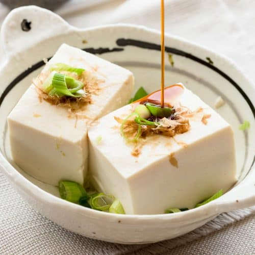
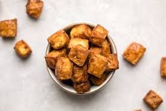

One of Nirmala's Favorites
Tofu


THE EASIEST CRISPY TOFU RECIPE
by Caitlin Shoemaker at From My Bowl
Ingredients
▢ 1 14 oz. block Extra Firm Tofu
▢ 1 tbsp Reduced-Sodium Tamari
▢ 2 tbsp Nutritional Yeast, plus more to taste
Instructions
- First, preheat the oven to 425F. Drain the liquid from the Tofu and “press” the extra liquid out by wrapping it in a clean dish towel, or by using a Tofu press. Try to get it as dry as possible!
- Cut the Tofu into even cubes. I like to cut the block in half lengthwise, then cut each rectangle into 16 even cubes. (Note: I like to lightly press the cubes with the dish towel if I have extra time/patience)
- Add the cubed Tofu to a large bowl, then use a spatula to gently toss it with the Tamari, until evenly coated. Add the Nutritional Yeast, then gently mix until coated. Add more Nutritional Yeast or extra seasonings to taste, if desired.
- Transfer the cubes to a baking sheet lined with a silicone mat, leaving space between the cubes. Bake on the top rack of the oven for 20 minutes, then carefully flip the cubes. Bake for another 20-30 minutes, depending on how crispy you like your tofu. The Tofu will also get slightly crispier as it cools.
- Serve as desired; leftovers will last in the fridge for up to one week.